60 minutes
A personalized hour for relaxation or the areas that need your attention.
$90per session
Book 60 minutes A quieter mind. A little less tension.
A massage that’s entirely yours.
Personalized therapeutic massage with Lauren Gronbeck, LMT, in a welcoming home-based studio in Gilbert, Arizona.
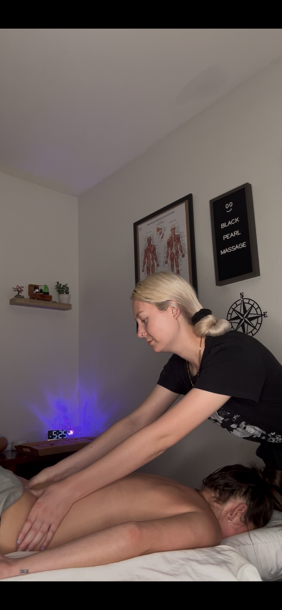
Whether you’re carrying a busy week in your shoulders, making time for recovery, or simply ready to switch off, your session begins with you. Lauren’s approach combines intentional bodywork with the kind of personal attention that makes it easier to settle in.
Choose the time that suits you.
The bodywork is tailored from there.
A personalized hour for relaxation or the areas that need your attention.
More time for focused work, thoughtful attention, and a slower pace.
An extended session with time to explore your full-body needs.
Add 10 minutes for $12 or 15 minutes for $18 to a 60- or 90-minute session. Choose available enhancements when booking.
I believe good bodywork starts with paying attention.
I’m Lauren Gronbeck, a licensed massage therapist specializing in therapeutic massage and pain management. I graduated from East Valley Institute of Technology in 2023 and founded Black Pearl Massage in 2025.
My goal is simple: offer intentional, personalized care that supports your quality of life. That might mean focused work, a peaceful hour, or a little of both. You can ask for more pressure, less pressure, conversation, or quiet. This time is yours.
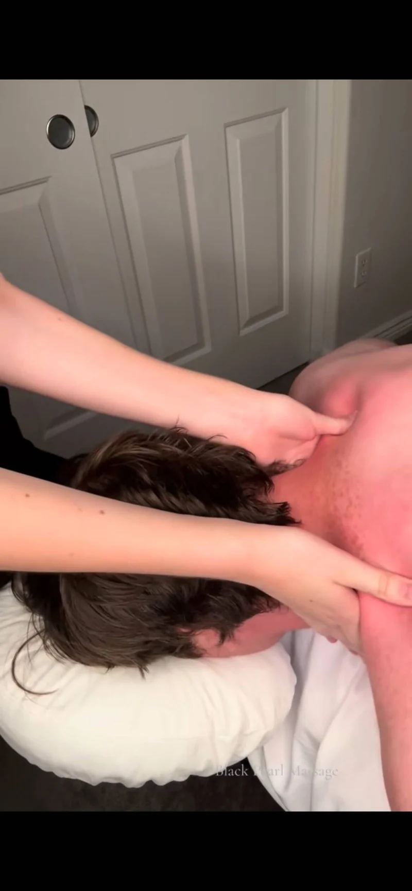
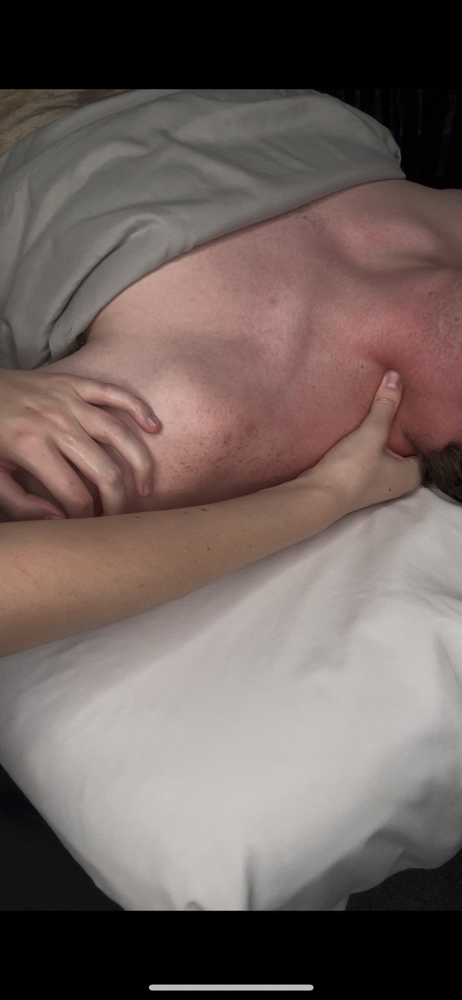
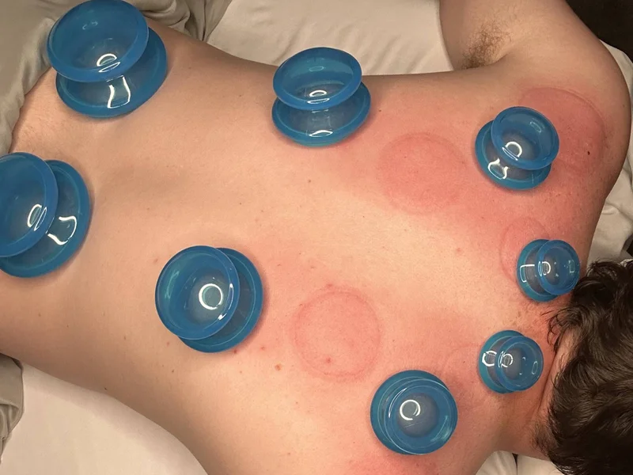
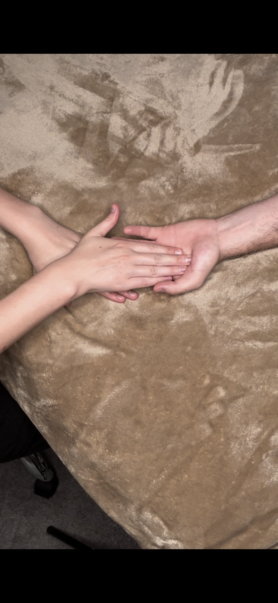
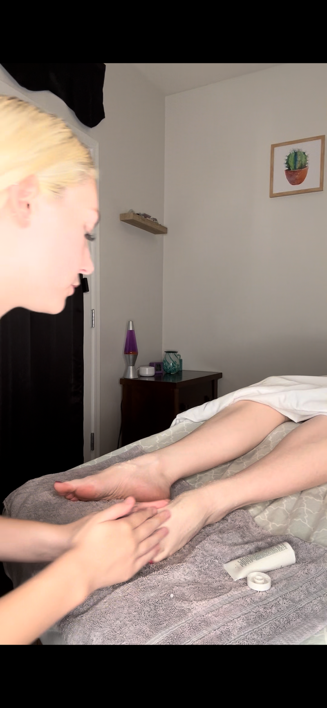
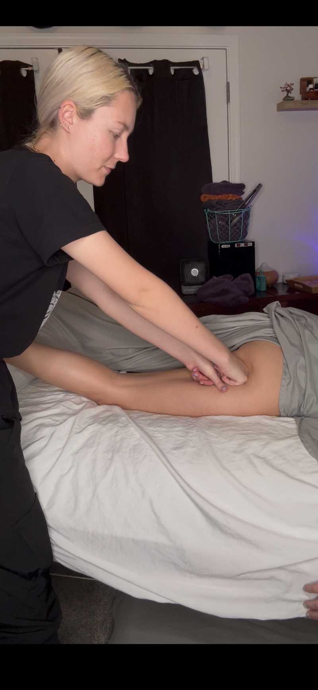
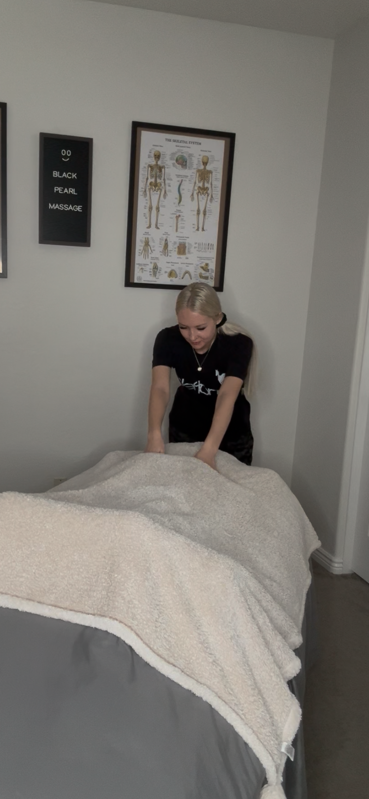
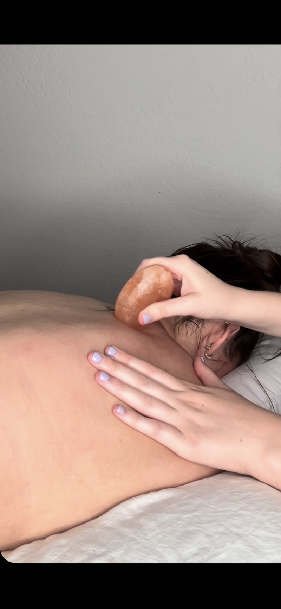
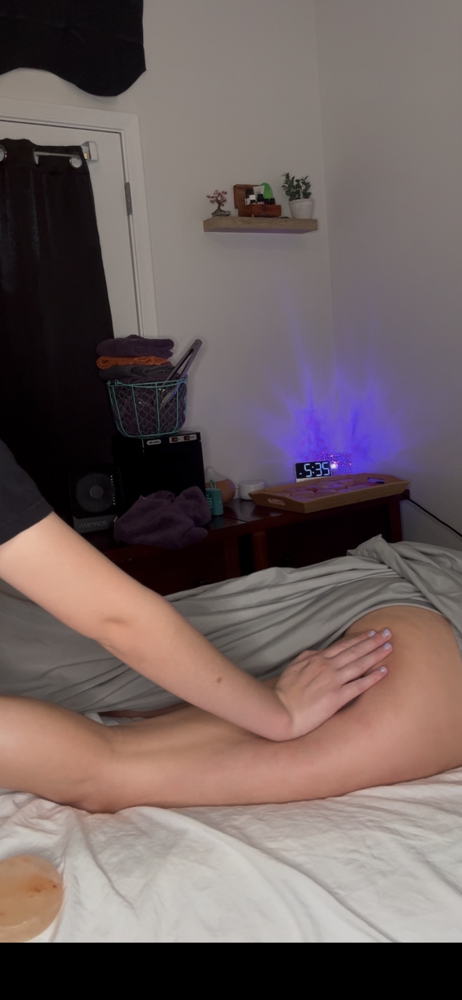
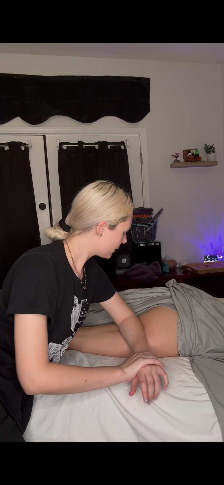
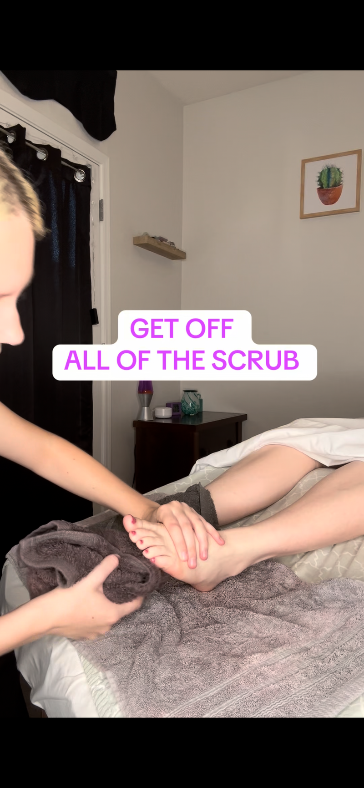
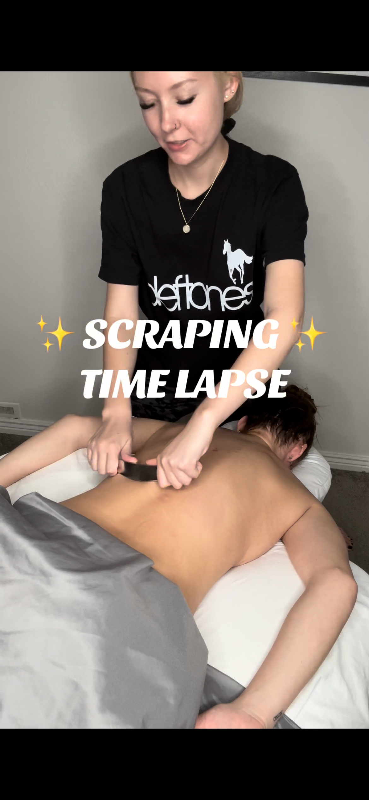

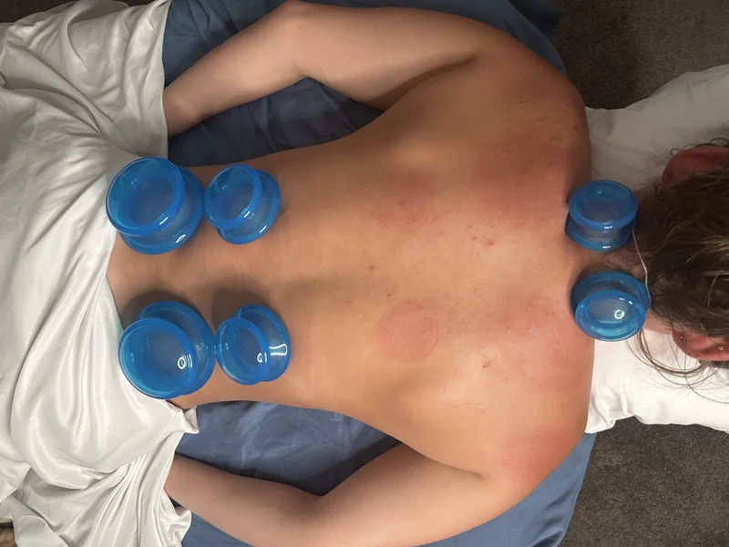
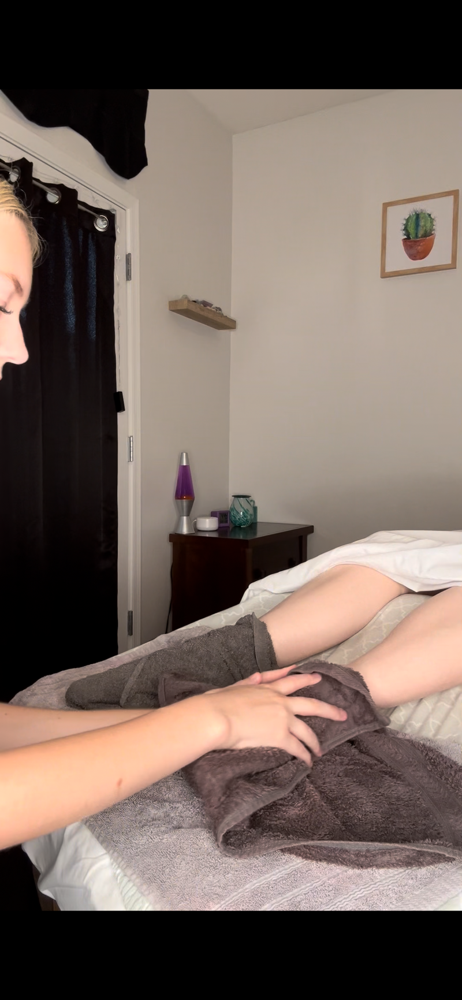

Scrolling automatically · 35 client testimonials
More Client Love on Instagram ↗Black Pearl Massage is a home-based studio near Val Vista & Pecos in Gilbert. For privacy and safety, your exact address is sent by text after your appointment is confirmed.
Book a little breathing room ↗Some Wednesdays and Sundays may be closed. See the booking calendar for availability.
Choose 60 minutes for a personalized hour, or give yourself 90 or 120 minutes for more focused work and a slower pace. Your session is tailored to your needs.
Conversation or quiet—both are welcome. Let Lauren know what helps you relax, and speak up anytime about pressure or comfort.
Your first and last name, phone number, and a card on file are required. Initials are not accepted, and no appointment will be granted without your first name, last name and phone number. Use the secure Square booking page to choose a session and see available times.
Canceling 24 hours or less before your appointment, or not showing up, results in a $40 fee for 60- and 90-minute sessions, or $60 for 2-hour sessions. The card on file is charged that day. Fees are waived for illness, sickness or emergency; repeated misuse of this exception may be reviewed.
Rescheduling or manually rebooking within 24 hours carries a $25 fee, charged that day. Please give at least 24 hours’ notice when shortening your session. Reducing your session time on arrival adds $25 to the revised session price.
Your session ends at its scheduled time and the full session price applies. If you are 15 minutes late without notice, your appointment is canceled as a no-show, the card on file is charged, and no bodywork will be provided—even if you arrive after the cutoff.
Clients must be 12 or older. An adult must accompany clients under 18 for the entire session.
Inappropriate or unprofessional behavior ends the session immediately, with the full price due. Clients whose sessions are terminated for this reason cannot return.
You take care of a lot.